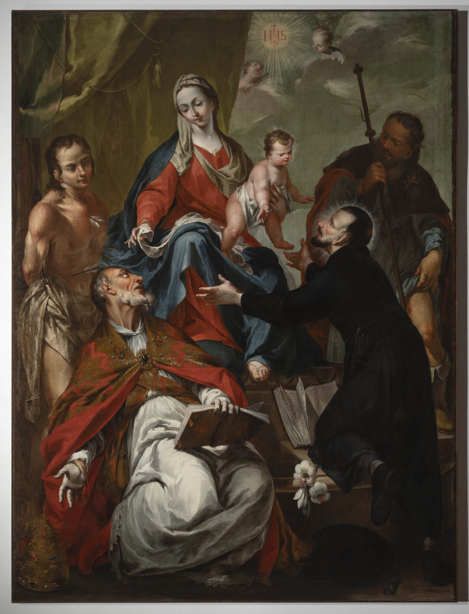
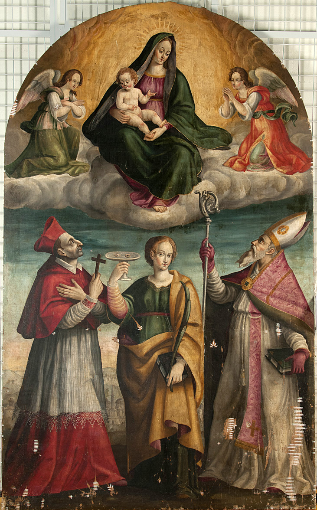
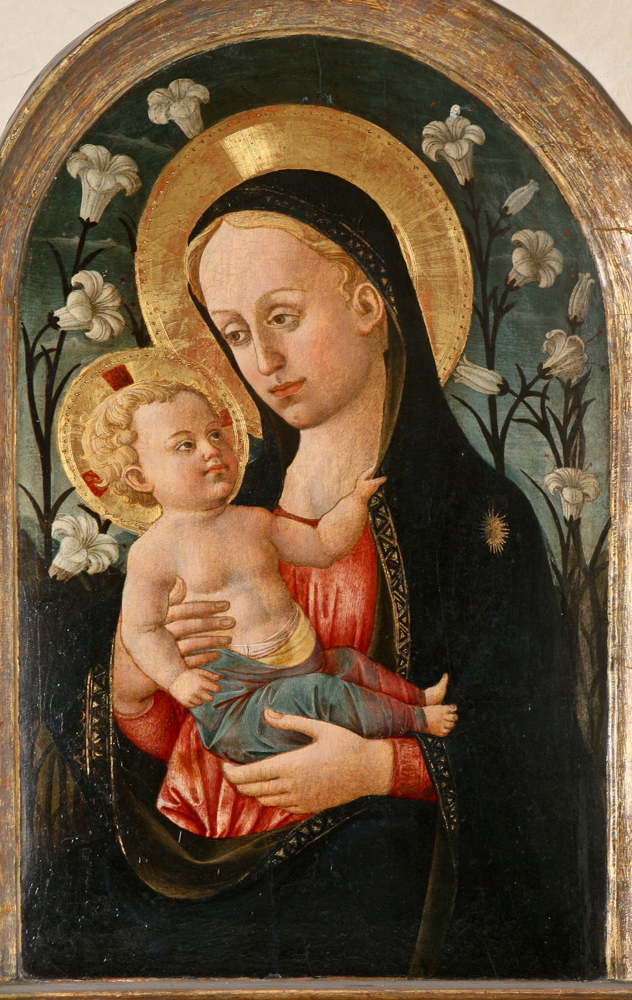

The Virgin Mary is one of the central figures in Christian iconography and a key image in the history of Italian art. Her image has inspired painters, sculptors, stained glass artists and architects for centuries. Virtually every region of Italy has works dedicated to the Madonna, from Byzantine icons to Renaissance altarpieces and Baroque sculptures. The choice of the theme associated with the image of the Virgin Mary is due to her exceptional role in shaping both the religious and artistic tradition of Italy. Mary was portrayed as mother, queen, intercessor, the ideal of female virtue. Her iconography is rich in symbols - the infant Christ, lilies, angels, radiance, throne, dove - each of which has a deep spiritual significance. In addition, Madonna images played an important role in social and political life: icons and statues were used in processions, patronized cities (e.g., Siena and Florence), and placed in cathedrals, monasteries, and private homes. They were not only objects of worship, but also elements of visual communication of faith. In this project, I aim to explore how the image of the Virgin Mary is represented in the ArCo database - and what information about her is missing or insufficiently revealed. This not only allows me to explore Italy's rich artistic heritage, but also to identify where current digital databases need to be supplemented. The Madonna image was the starting point for building semantic data enrichment through RDF and artificial intelligence.
The SPARQL queries revealed a key limitation: no works were found that had both the tempera technique and an explicit subject referencing the Madonna. This reflects a knowledge gap in the data structure. To address this, I enriched the dataset with additional information.
For example, I reconstructed data about the “Maestà” by Duccio di Buoninsegna, a masterpiece executed in tempera and gold on wood, created for the altar of Siena Cathedral. While not listed in ArCo with those combined attributes, it is a cornerstone of Italian Marian iconography.
Using Large Language Models (LLMs), I extracted iconographic details, historical context, and cultural function of the work, which I then translated into RDF using ArCo-compatible vocabulary.
Semantic enrichment:
This approach demonstrates how structured data can be meaningfully expanded using AI and semantic technologies, providing deeper insights into Italy’s artistic legacy.